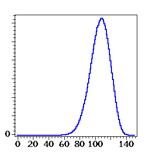
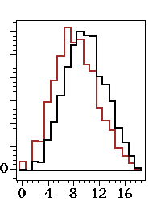
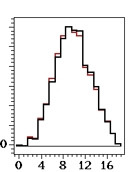
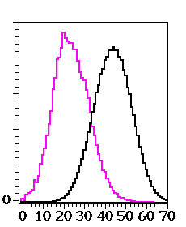
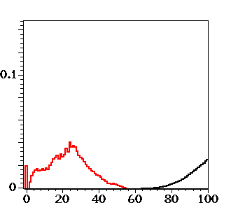

one Markov step |
two Markov steps |
three Markov steps |
four Markov steps |
type = [22222] |
type = [2222] |
type = [3222] |
type = [3322] |
type = [4222] |
type = [4322] |
type = [3322] |
type = [333222] |
type = [33332222] |
type = [3333] |
type = [33333] |
type = [333333] |
type = [3333333] |
type = [33333333] |
type = [333333333] |
type = [4444422222] |
type = [5555] |
type = [5555555] |
type = [666666] |
type = [66666666] |
 type = [65544332] |
| m | ||||||||
| 4 | 5 | 6 | 7 | 8 | 9 | 10 | ||
|---|---|---|---|---|---|---|---|---|
| p | 3 | 24 | 40 | 60 | 84 | 112 | 144 | 180 |
| 4 | 36 | 60 | 90 | 126 | 168 | 216 | 270 | |
| 5 | 48 | 80 | 120 | 168 | 224 | 288 | 360 | |
| 6 | 60 | 100 | 150 | 210 | 280 | 360 | 450 | |
One Markov Step |
Two Markov steps |
Three Markov steps |
Four Markov steps |
|  Five Markov steps |
Six Markov steps |
Seven Markov steps |
Eight Markov steps |
Ten Markov steps |
 Twelve Markov steps |
Fifteen Markov steps |
Twenty Markov steps |
one Markov step |
two Markov steps |
three Markov steps |
four Markov steps |
|  four Markov steps |
five Markov steps |
six Markov steps |
seven Markov steps |
four, five, six, and seven Markov steps |
eight, ten, twelve, fifteen, and twenty Markov steps |
one, two, three, four, and five Markov steps |
six, seven, eight, nine, and ten Markov steps |
 eleven, twelve, thirteen, fourteen, and fifteen Markov steps |
20, 25, 30, 35, and 40 Markov steps |
Evolution of the full Markov process |
|
one Markov step |
two Markov steps |
three Markov steps |
four Markov steps |
five, six, seven, eight, and ten Markov steps |
12, 14, 16, 18, and 20 Markov steps |
||
25, 30, 35, and 40 Markov steps |
|||
one Markov step |
two Markov steps |
three Markov steps |
four Markov steps |
five, six, seven, eight, and ten Markov steps |
12, 14, 16, 18, and 20 Markov steps |
||
25, 30, 35, and 40 Markov steps |
|||
one Markov step |
 two Markov steps |
three Markov steps |
one, two, three, four, and five Markov steps |
six, seven, eight, ten, and twelve Markov steps |
14, 16, 18, 20, and 25 Markov steps |
 30, 35, 40, 50, and 60 Markov steps |
one Markov step |
two Markov steps |
 three Markov steps |
one, two, three, four, and five Markov steps |
six, seven, eight, ten, and twelve Markov steps |
14, 16, 18, 20, and 25 Markov steps |
30, 35, 40, 50, and 60 Markov steps |
| [RSSS] | J. Ruffo, Y. Sivan, J. Soprunova, and F. Sottile, Experimentation and conjectures in the real Schubert calculus for flag manifolds, Experimental Mathematics, 15, No. 2 (2006), 199-221. |